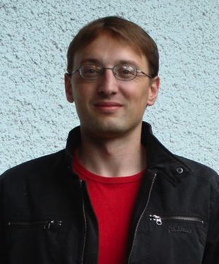

personal home page / Andreas Maier
ContactAndreas Maier |
 |
I'm a graduate student and a member of the "Graduiertenkolleg Theoretische Physik und Astrophysik". At the moment I'm working on my PhD thesis about turbulence in star forming regions. One main goal of my work is to implement a subgrid scale turbulence model into the cosmological hydrocode ENZO in course of the FEARLESS project. My advisor for this project is Prof. Jens Niemeyer and my collaborators are Wolfram Schmidt, Luigi Iapichino, Markus Hupp. Christoph Federrath and Prof. Christian Klingenberg.
Publications
- "Hermite Multi-Level Neighbor Scheme", Master Thesis, 2002, Rutgers University, New Brunswick, NJ, USA: thesis.pdf
- "Detonationsfronten in teilweise verbranntem Sternmaterial", Diploma Thesis, 2005, University of Würzburg, Germany: diplom.pdf
- "The Birth, Life, and Death of Flames and Detonations in SNe Ia", American Astronomical Society Meeting 206, #27.02; Bulletin of the American Astronomical Society, Vol. 37, p.467: NASA ADS
- "C+O detonations in thermonuclear supernovae: Interaction with previously burned material", Astronomy and Astrophysics, Volume 451, Issue 1, May III 2006, pp.207-212: NASA ADS
Talks, Posters and Reports
- " Mini-Workshop on Lorentz Violation", Report, 2006, GK Mini-Workshop: RTG_LorentzViolation.pdf
- "A New Modelling Approach for Turbulent Astrophysical Flows", Poster, 2006, Distributed European Infrastructure for Supercomputing Applications: deisa_poster.pdf
- "Turbulence and first stars in the universe", Talk, 2006, GK-Workshop in Samerberg: gkworkshop.pdf
- "FEARLESS - SubGrid Scale Turbulence Modeling and Applications to Star Formation", Poster, 2007, Structure Formation in the Universe (Conference - Chamonix, France): chamonix_poster.pdf
- "Scaling Laws and Intermittency in Highly Compressible Turbulence", Talk, 2007, Astrophysical Seminar (Würzburg): supersonic.pdf
- "Star Formation in the Turbulent Interstellar Medium and its Implications on Galaxy Evolution", Report, 2007: h0972_report.pdf
Related documentations
- "How to use Subversion to develop Enzo", Report, 2008: subversion.pdf
- "How to install HDF5 1.6.6 for Suse Linux 9.3", Report, 2007: hdf5.pdf, old version: hdf5old.pdf
More information
 Curriculum vitae (PDF, in german)
Curriculum vitae (PDF, in german)
 My private homepage (in german)
My private homepage (in german)